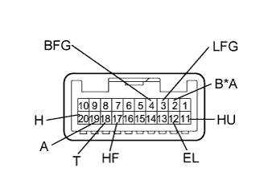

LIGHTING SYSTEM > Headlight Dimmer Switch Circuit |
| 1.READ VALUE USING INTELLIGENT TESTER (HEADLIGHT DIMMER SWITCH) |
Using the intelligent tester, read the Data List (Click here).
| Tester Display | Measurement Item/Range | Normal Condition | Diagnostic Note |
| Dimmer SW | Headlight dimmer switch high position signal / ON or OFF | ON: Headlight dimmer switch in high or high flash position OFF: Headlight dimmer switch in low position | - |
| Passing Light SW | Headlight dimmer switch high flash position (pass) signal / ON or OFF | ON: Headlight dimmer switch in high flash position OFF: Headlight dimmer switch not in high flash position | - |
| Rear Fog Light SW* | Rear fog light switch signal / ON or OFF | ON: Rear fog light switch on OFF: Rear fog light switch off | - |
| Front Fog Light SW | Front fog light switch signal / ON or OFF | ON: Front fog light switch on OFF: Front fog light switch off | - |
| Auto Light SW | Headlight dimmer switch AUTO position signal / ON or OFF | ON: Headlight dimmer switch in AUTO position OFF: Headlight dimmer switch not in AUTO position | - |
| Head Light SW (Head) | Headlight dimmer switch head position signal / ON or OFF | ON: Headlight dimmer switch in head position OFF: Headlight dimmer switch not in head position | - |
| Head Light SW (Tail) | Headlight dimmer switch tail position signal / ON or OFF | ON: Headlight dimmer switch in tail or head position OFF: Headlight dimmer switch in neither tail nor head position | - |
|
| ||||
| OK | ||
| ||
| 2.INSPECT HEADLIGHT DIMMER SWITCH ASSEMBLY |
|  |
Remove the headlight dimmer switch (Click here).
Measure the resistance according to the value(s) in the table below.
| Tester Connection | Switch Condition | Specified Condition |
| 2 (B) - 3 (LFG) | Rear fog light switch on | Below 1 Ω |
| 4 (BFG) - 3 (LFG) | Front fog light switch on | Below 1 Ω |
| 11 (HU) - 12 (EL) | Headlight dimmer switch high position | Below 1 Ω |
| Headlight dimmer switch high flash position | ||
| 17 (HF) - 12 (EL) | Headlight dimmer switch high flash position | Below 1 Ω |
| 18 (T) - 12 (EL) | Headlight dimmer switch tail position | Below 1 Ω |
| Headlight dimmer switch head position | ||
| 19 (A) - 12 (EL) | Headlight dimmer switch AUTO position | Below 1 Ω |
| 20 (H) - 12 (EL) | Headlight dimmer switch head position | Below 1 Ω |
| 2 (B) - 3 (LFG) | Rear fog light switch off | 10 kΩ or higher |
| 4 (BFG) - 3 (LFG) | Front fog light switch off | 10 kΩ or higher |
| 18 (T) - 12 (EL) | Headlight dimmer switch off | 10 kΩ or higher |
| 19 (A) - 12 (EL) | ||
| 20 (H) - 12 (EL) |
| *A | w/ Rear Fog Light |
|
| ||||
| OK | |
| 3.CHECK HARNESS AND CONNECTOR (HEADLIGHT DIMMER SWITCH ASSEMBLY - MAIN BODY ECU AND BODY GROUND) |
Disconnect the G31 headlight dimmer switch connector.
Disconnect the G46* and G47 main body ECU connectors.
Measure the resistance according to the value(s) in the table below.
| Tester Connection | Condition | Specified Condition |
| G31-2 (B) - G46-23 (RFOG)* | Always | Below 1 Ω |
| G31-4 (BFG) - G47-27 (FFOG) | Always | Below 1 Ω |
| G31-11 (HU) - G47-5 (HU) | Always | Below 1 Ω |
| G31-17 (HF) - G47-8 (HF) | Always | Below 1 Ω |
| G31-18 (T) - G47-30 (TAIL) | Always | Below 1 Ω |
| G31-19 (A) - G47-28 (A) | Always | Below 1 Ω |
| G31-20 (H) - G47-29 (HEAD) | Always | Below 1 Ω |
| G31-3 (LFG) - Body ground | Always | Below 1 Ω |
| G31-12 (E) - Body ground | Always | Below 1 Ω |
| G31-4 (BFG) - Body ground | Always | 10 kΩ or higher |
| G31-11 (HU) - Body ground | Always | 10 kΩ or higher |
| G31-17 (HF) - Body ground | Always | 10 kΩ or higher |
| G31-18 (T) - Body ground | Always | 10 kΩ or higher |
| G31-19 (A) - Body ground | Always | 10 kΩ or higher |
| G31-20 (H) - Body ground | Always | 10 kΩ or higher |
|
| ||||
| OK | ||
| ||